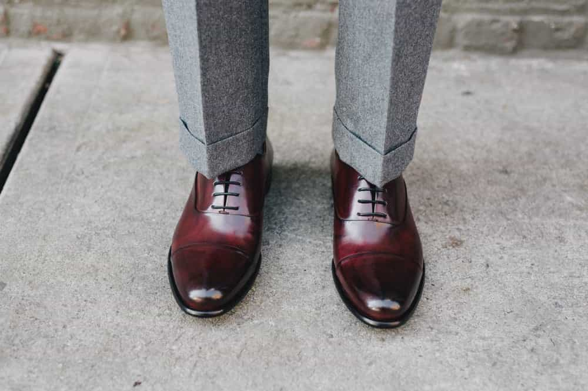
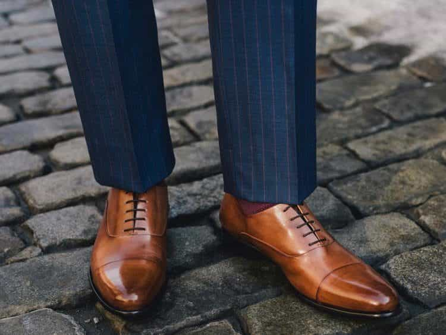
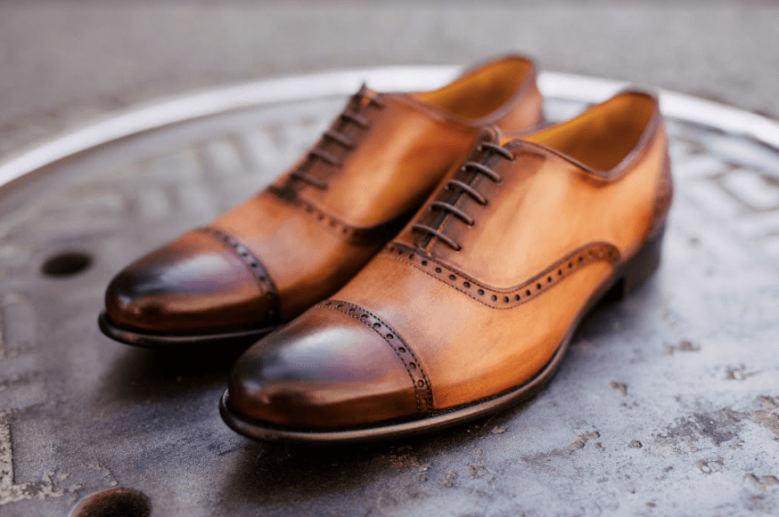
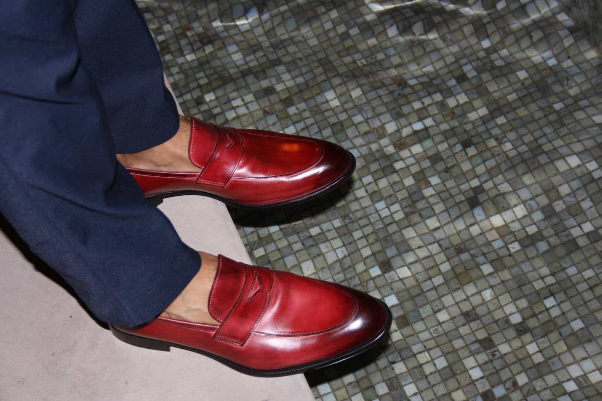

Sponsored Article is ROK's official account that publishes sponsored articles from advertisers. If you are interested hiring a sponsored article for your site, product, or service, visit our advertising page.


The following article is sponsored by Paul Evans Shoes.
Shoes are an aspect of fashion that most men don’t put much thought into. In particular, most men don’t think about what their choice of shoe says about them. While most people know the difference between formal-wear and more casual shoes, few have considered all the factors that go into how one’s choice of shoe affects how others perceive them.
Choosing the wrong shoe for a situation or event reflects as poorly as you as any other fashion faux pas, so you owe it to yourself to learn more about shoes and how to wear them properly. Here are the most critical questions you need to ask when buying shoes .

Most people generally recognize that different occasions require different styles of dress. For example, you wouldn’t dress for a wedding in the same way you’d dress for a date, or a business meeting, or a night on the town. Different types of social functions require different types of fashion, including shoes: your choice of shoe can make or break you depending on the situation.
It behooves you to learn how you can pick the best shoe to match any given situation. For example, if you’re going on a date, boots, oxfords, and monkstraps are all wise choices. If you’re going to brunch, you can get by with sneakers or loafers. When heading to the offices, monkstraps and oxfords are ideal. There are a number of different shoe choices you can make depending on the situation.
Shoes are an integral part of your wardrobe and thus you can’t afford to pick the wrong one. Depending on where you’re going and what you’re doing, your choice of shoe can either enhance your presentation or diminish it. Learn what expectations you’re expected to live up to in a given situation and you’ll be able to pick the perfect shoe every time.

An often-overlooked part of shoe selection is dress code. While many people assume that they know what types of shoes are appropriate for various dress codes, they usually overlook the particulars and assume that there is a one-size-fits-all type of shoe that works for multiple occasions. While there is some truth to this, a closer eye to detail will allow you to pick out the best shoe to fit the occasion.
For example, when dressing for a black tie dress code, any old shoe simply won’t do: you need oxfords to match the rest of your outfit. Similarly, oxfords are necessary when dressing for a business formal dress code. On the other hand, cocktail attire gives you more selection when it comes to your choice of shoe, from oxfords to monkstraps to boots. Business casual attire also gives you considerably more leeway when it comes to picking a shoe type.
Most people don’t pay attention to these details and are thus left out in the cold when it comes to dressing well. By merely paying more attention to what different types of dress code call for, you can outclass the average man and take your fashion game up a notch.

Finally, an often-ignored aspect of shoe selection is how the shoes pair with your pants. If you wear pants that clash with the color of your shoes, the contrast will be visible to everyone and will ruin the appearance of your outfit. To maintain consistency with your looks, you need to choose the right color of shoe to match your pants.
For black pants, the choice is simple: only a black shoe will do. However, when it comes to blue or grey pants, you can get more creative. Grey pants are best paired with brown shoes of varying shades, from oxblood to marrone to chocolate. Blue pants can also be paired with brown shoes from oxblood to chocolate and everything in between.
Shoe color is an overlooked detail because many people don’t carefully consider how different colors work together when combined into a single outfit. By specifically picking shoe colors that match your pants, you can take your fashion sense to the next level.

Finding a shoe manufacturer that understands the fundamentals of shoe selection is difficult. Fortunately, Paul Evans has a strong reputation for quality and selection. Paul Evans shoes are designed in New York and manufactured in Italy, made with calfskin leather and hand-painted to look gorgeous and stunning. They also feature blake-stitching for improved comfort and easier resoling, further adding to their longevity. They boast a large lineup of shoes in varying cuts and colors, allowing you to select the ideal shoe to pair with whatever outfit you may be wearing.
Additionally, Paul Evans boasts low prices due to their direct-to-consumer business model: you buy from their website and they ship directly to you. Paul Evans boasts free shipping and returns as well as a return policy of 365 days. Finally, Paul Evans allows customers to pay in installments of as low as $36 per month with 0% financing. We’re also running a promotion for ROK readers: use coupon ROK50 to get $50 off any pair of shoes.
Shoes are a far more important part of your fashion style than you may think. Shoes aren’t merely something you wear to protect your feet: they signal your fashion sensibilities, wealth, eye for detail, and willingness to invest in yourself. A poorly-chosen pair of shoes can undermine an entire outfit if you aren’t careful.
For the best results in your fashion adventures, you need to be mindful as to how your shoe fits in with your look. Whether you’re dressing for a black tie affair, a cocktail party, a business meeting, or a date, there’s an appropriate shoe for every situation. By carefully considering your shoe selection, you will be able to make the right impression and succeed at whatever you are planning to do. Click here to visit the Paul Evans web store. Remember to use coupon ROK50 for your $50 off discount.